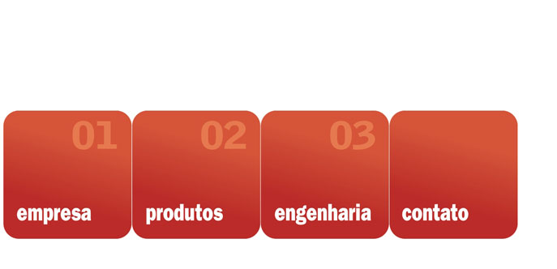

|
Este Bazar da Informação apresenta curiosidades úteis sobre o aço para o dia-a-dia, confira: |
|
|
•
Avaliação
comparativa
entre o uso de
estruturas
metálicas versus
o uso do
concreto |
| Neste quadro você poderá avaliar os conceitos de algumas das vantagens do uso das estruturas metálicas nos processos construtivos. Embora a associação dos dois sistemas maximize as vantagens de ambos os sistemas, as informações deste quadro são importantes para que você oriente suas decisões no momento do seu projeto. É bom lembrar, que o uso de estruturas metálicas pré-fabricadas de aço em processos construtivos, há muitos anos é largamente utilizado no exterior, e a cada dia torna-se mais comum no Brasil. |
|
Estrutura Metálica |
Estrutura de Concreto |
|
Na administração da obra |
|
|
• Execução em linha de produção (fábrica). Somente a montagem é realizada no canteiro. |
• Predominantemente executado no canteiro. |
|
• Precisão dimensional elevada. |
• Precisão dimensional menor. |
|
• Precisão quantitativa de materiais elevada. |
• Maior dificuldade na precisão de quantidades. |
|
• Menor diversificação de materiais (aço, parafusos, etc.). |
• Maior diversificação de materiais (cimento, areia, brita, formas de madeira, ferros etc). |
|
• Redução do número de material humano com qualificação. |
• Maior número de material humano com menos qualificação. |
|
• Diminuição do canteiro de obras. Material chega pronto. |
• Necessidade de espaço para matérias primas e manuseio. |
|
Fundações |
|
|
• Leveza estrutural. |
• Maior peso estrutural. |
|
• Cargas menores nas bases. |
• Bases mais reforçadas. |
|
• Volumes menores nos blocos. |
• Volumes maiores. |
|
• Sistemas mais econômicos. |
• Sistemas mais onerosos. |
|
Prazos |
|
|
• Execução das estruturas e das fundações simultaneamente. |
• Início das estruturas dependentes do término das fundações. |
|
• Avanços de montagem por grupos de pavimentos. |
• Avanço por pavimentos. Um a um. |
|
• Possibilita a alvenaria acompanhar a montagem. |
• Dificulta a execução das paredes enquanto durante o escoramento da estrutura. |
|
Custos Financeiros |
|
|
• Redução dos prazos. Antecipação de utilização da obra. • Retorno mais rápido do investimento. |
• Maiores prazos aumentam os custos. |
|
Outras Vantagens |
|
|
Entre outras vantagens da utilização de estruturas metálicas na construção, podemos citar: • a maior facilidade da manutenção; • menores riscos de alterações de previsão; • o aumento do espaçamento entre colunas e o aumento da área útil dos vãos; • a utilização dos mesmos gabaritos por pavimento e um valor residual maior com reaproveitamento de todo o material estrutural em caso de desmontagens. |
|

Abaixo você encontra uma relação de termos muito comuns usados em obra e construções.
A
ABAULAR - Dar forma curva, arqueada, a uma superfície, a fim de proporcionar melhor escoamento da água ou acabamento estético.
ABERTURA - Termo genérico que resumo todo e qualquer rasgo na construção, seja para dar lugar a portas e janelas, seja para criar frestas ou vãos.
ABERTURA DE VALA - Ato de fazer valas.
ABÓBADA - Todo o teto côncavo pode-se chamar abóbada. Cobertura encurvada. Do ponto de vista geométrico, a abóbada tem origem num arco que se desloca e gira sobre o próprio eixo, cobrindo toda a superfície do teto. As abóbadas variam de acordo com a forma do arco de origem. Abóbada ogival, também chamada gótica, cujo arco tem forma de ogiva, é uma marca da arquitetura árabe. Abóbada aviajada tem origem num arco cujas extremidades estão em desníveis. Há ainda a abóbada de lunetas. De menor altura, esse tipo está presente nas casas de estilo colonial americano e facilita a iluminação interior.
ABRAÇADEIRA - é uma peça de ferro que tem como função segurar as vigas do madeiramento ou paredes.
ABRASÃO - Desgaste causado nas superfícies pelo movimento de pessoas ou objetos.
ABRIGO - Lugar onde o homem pode-se proteger das intempéries. No uso corrente, indica locais como garagem, também chamada abrigo de carro.
ACABAMENTO - Remate final da estrutura e dos ambientes da casa, feito com os diversos revestimentos de pisos, paredes e telhados.
ACESSO - Rampa, escada, corredor ou qualquer meio de entrar e sair de um ambiente, uma casa ou um terreno.
ACETINADO - Todo o material tratado para ter textura semelhante ao cetim.
ACLIVE - apresentação do terreno em subida, com relação à rua.
AÇO-CARBONO - Liga de aço e carbono que resulta num material leve e de grande resistência.
ADEGA - Também conhecida como cave. A palavra, provavelmente, tem origem no termo francês cave: lugar especial da casa, em geral no subsolo, onde se guardam vinhos e azeites. A adega precisa de ter condições climáticas controladas, para melhor conservar os vinhos.
ADOBO (OU ADOBE) - Tijolo feito com uma mistura de barro cru, areia em pequena quantidade, estrume e fibra vegetal. Deve ser revestido com massa de cal e areia. O termo adobe vem do árabe attobi e designa, também, seixos rolados dos leitos de rios.
AFAGAR - Nivelar, aplainar, desbastar saliências ou alisar madeiras.
AFASTAMENTO (OU RECUO) - Refere-se às distâncias entre as faces da construção e os limites do terreno.
AFOGAR - colocar muita água na preparação da argamassa.
AGLOMERADO (OU CONTRAPLACADO) - Placa prensada, composta de serragem compactada com cola e fechada com duas lâminas de madeira.
AGREGADO - É o material mineral (areia, brita, etc.) ou industrial que entra na preparação do betão
AGRIMENSURA - é a medição da superfície do terreno na qual o arquiteto irá se basear para o trabalho.
ÁGUA DO TELHADO - Cada uma das superfícies inclinadas da cobertura, que principia no espigão horizontal (cumeeira) e segue até à beirada.
ÁGUA-FURTADA - Vão entre as tesouras do telhado. Ângulo do telhado por onde correm as água pluviais. Sótão com janelas que se abrem sobre as águas do telhado.
ÁGUA-MESTRA - são os planos trapezoidais da cobertura dos telhados retangulares de quatro águas.
ALAMBRADO - A cerca feita com fios de arame que delimita um terreno.
ALÇAPÃO - Portinhola no piso ou no que dá acesso a caves ou sótãos.
ALÇAR - Levantar a parede, construir.
ALDRAVA (OU ALDRABA) - Argola que fica do lado de fora da porta e serve de instrumento para bater à porta.
ALICERCE - base de alvenaria que fica sob o solo e tem como função sustentar a edificação. Ver Fundação.
ALMOFADA - comum em portas e divisórias, é a pintura, escultura ou trabalho de marcenaria feita em pequenas dimensões e emoldurada por filetes e reentrâncias.
ALPENDRE - Cobertura suspensa por si só ou apoiada em colunas sobre portas ou vãos. Geralmente, fica localizada na entrada da casa. Aos alpendres maiores dá-se o nome de varanda.
ALTO-RELEVO - Saliência criada e definida numa superfície plana.
ALVARÁ DE CONSTRUÇÃO - Documento emitido pela autoridade municipal onde a construção está localizada, que licencia a execução da obra.
ALVENARIA - Conjunto de pedras, de tijolos ou de blocos - com argamassa ou não - que forma paredes, muros e alicerces. Quando esse conjunto sustenta a casa, ele chama-se alvenaria estrutural. O próprio trabalho do pedreiro.
AMARRAÇÃO - Parte da armadura destinada a transmitir os esforços dessa peça para outra
AMIANTO - Tem origem num mineral chamado asbesto e é composto por filamentos delicados, flexíveis e incombustíveis. É usado na construção de refratários e na composição do fibrocimento.
ANDAIME - Plataforma usada para alcançar pavimentos superiores das construções.
ANODIZAÇÃO - Tratamento químico no alumínio que lhe confere aparência fosca e cores variadas.
ANTEPROJETO - Primeiras linhas traçadas pelo arquiteto em busca de uma idéia ou concepção para desenvolver um projeto.
APICOADO - Superfície submetida a desbastamento do qual resulta uma textura rugosa, antiderrapante. Normalmente feito de pedras.
APLIQUE - Ornamento. Enfeite fixado em paredes ou muros.
APRUMAR - Acertar a verticalidade de paredes e colunas por meio do prumo.
AQUECIMENTO CENTRAL - Sistema provido de resistências elétricas ou de serpentinas (se o aquecimento for feito a gás) que centraliza o aquecimento da água de todas as torneiras de uma casa.
ARCADA - Sucessão de arcos.
ARCO - Semi-circunferência que cobre um vão. Nome dado à construção que dá origem às abóbadas.
ARENITO - Rocha composta de pequenos grãos de quartzo, calcário ou feldspato, usada em pisos externos. Nos pisos internos, o arenito normalmente recebe polimento e rejunte de granilite.
ARGAMASSA -Mistura de materiais inertes (areia) com materiais aglomerantes (cimento e/ou cal) e água, usada para unir ou revestir pedras, tijolos ou blocos, que forma conjuntos de alvenaria. Ex.: argamassa de cal (cal+areia+água). A argamassa magra ou mole é a mistura com menor quantidade de aglomerante (cal e/ou cimento), responsável pela aglutinação. Já a argamassa gorda tem o aglomerante em abundância.
ARMADURA ESTRUTURAL - Conjunto de ferros que ficam dentro do betão e dão rigidez à obra.
ARQUITETURA - Arte de compor e construir edifícios para qualquer finalidade, tendo em vista o conforto humano, a realidade social e o sentido plástico da época em que se vive. Uma das artes mais antigas. Escritos medievais são ilustrados com Deus segurando compasso e esquadro, uma alusão ao arquiteto do universo.
ARQUITRAE - Viga de sustentação que, nas suas extremidades, se apóia em colunas. Arrimar Apoiar, encostar, escorar.
ARQUITRAVE - viga de sustentação apoiada sobre as extremidades das colunas.
ART DÉCO - Movimento que atinge o seu apogeu entre os anos 20 e 40. Surge em oposição aos excessos do Art Nouveau e marca a arquitetura com linhas geométricas e tons pastel. O movimento concilia a produção industrial e as artes, influenciando os primeiros trabalhos do arquiteto franco-suíço Le Corbusier. Ele tornou ainda mais despojadas as formas desse estilo, criando as bases da arquitetura funcional ou moderna. Os projetos enfatizam vãos e grandes espaços envidraçados. As colunas, antes ornamentadas, agora assumem função estrutural e passam a ser denominadas pilotis.
ART NOUVEAU - A Arte Nova refere-se ao estilo arquitetônico e de arte decorativa que marcou o final do século XIX e o começo do XX. Muitos dos seus elementos retomam o Rococó e o Gótico. Assim, os edifícios mostram ornatos como ninfas com flores nos cabelos. Na Europa, misturou-se a elementos regionais, ganhando diversas versões. A primeira construção art nouveau foi projetada pelo arquiteto belga Victor Horta, em 1892, em Bruxelas. Mais tarde, o metro de Paris (França), recebeu portões projetados por Hector Guimard, que traziam formas sinuosas. Antonio Gaudi, um dos mais brilhantes arquitetos espanhóis, foi buscar inspiração às tradições medievais do seu país para erguer obras dentro do novo estilo. Em Barcelona, projetou a Sagrada Família, catedral que começou a ser construída em 1883, com torres góticas e adornos barrocos. O estilo art nouveau começou a perder força pouco antes da Primeira Guerra Mundial (1914-18).
ASA - é a folha de uma dobradiça; o lado de uma construção.
ASSENTAR - Colocar e ajustar tijolos, blocos, esquadrias, pisos, pastilhas e outros acabamentos.
ATERRO - Colocação de terra ou entulho para nivelar uma superfície irregular.
ÁTRIO - Pátio de entrada das casas romanas, cercado por telhados pelos quatro lados, porém descoberto. Hoje o termo identifica um pátio de entrada de uma habitação.
AUTOCAD - Software que facilita a confecção de plantas e croquis, oferecendo ferramentas essenciais para realizar projetos em computador. Fabricado pela Autodesk.
AZULEJO - Ladrilho. Placa de cerâmica polida e vidrada de diversas cores. A origem do azulejo remonta aos povos babilônicos. Com os árabes, os azulejos ganharam maior difusão, marcando fortemente a arquitetura moura na Península Ibérica. Originalmente, os azulejos apresentavam relevos, característica que sobrevive até hoje.
B
BAIXO-RELEVO - Trabalho de escultura em que as figuras sobressaem muito pouco em relação à superfície que lhes serve de fundo.
BALANÇO - Saliência ou corpo que se projeta para além da prumada de uma construção, sem estrutura de sustentação aparente.
BALAÚSTRE - Pequena coluna ou pilar que, alinhada lado a lado, sustenta corrimãos. Tem origem no latim balaustium, nome da flor de romã, cuja forma inspirou os primeiros balaústres.
BALCÃO - Elemento em balanço, na altura de pisos elevados, disposto diante de portas e janelas. É protegido com grades ou peitoril.
BALDRAME - Designação genérica dos alicerces de alvenaria. Conjunto de vigas de betão armado que corre sobre qualquer tipo de fundação. Peças de madeira que se apóiam nos alicerces de alvenaria e que recebem o vigamento do soalho.
BANDEIRA - caixilho fixo ou móvel sobre janelas e ou portas que tem a função de aumentar a ventilação e luminosidade do ambiente.
BANGALÔ - Do inglês bungalow, designa as casa de campo construídas na Índia, térreas e com grandes varandas cobertas.
BARRADO - Lambris, revestimento colocado nas partes inferiores das paredes.
BARROCO - Estilo marcado pelo excesso de detalhes e de rebuscamentos. Historicamente, foi uma reação à austeridade do período artístico anterior, o Clássico. Na arquitetura, introduziu novas concepções de espaço, de tempo e, principalmente, de movimento. Assim, as construções exibem um vasto número de ornatos, apliques e pingentes que parecem flutuar em fachadas e paredes.
BARROTE - Pequena peça de madeira, chumbada com massa na laje, que permite fixar o piso de tábua. Tem de 3 a 5 centímetros de comprimento e de 2.5 a 3.5 centímetros de altura.
BASALTO - Rocha muito dura, de grão fino e cor escura, usada na pavimentação de estradas e na construção.
BASCULANTE - Sistema empregado em portas e janelas, onde as peças giram em torno de um eixo até atingir a posição perpendicular em relação ao batente ou à esquadria, abrindo vãos para ventilação.
BATENTE - Rebaixo onde a porta ou a janela encaixam-se ao fechar. A folha que fecha primeiro, na portas ou janela.
BAY-WINDOW - é uma janela de três faces que fica saliente em relação à construção.
BEIRAL - Prolongamento do telhado para além da parede externa, protegendo-a da ação das chuvas. As telhas dos beirais podem ser sustentadas por mãos-francesas.
BETÃO - Mistura de água, cimento, areia e pedra britada, em proporções prefixadas, que forma uma massa compacta e endurece com o tempo.
Betão aparente é aquele que não recebe revestimentos. Betão armado: na sua massa dispõem-se armaduras de metal para aumentar a resistência.
Betão ciclópico tem pedras aparentes e de formas irregulares.
Betão celular é uma variável que substitui a pedra britada por microcélulas de ar, conferindo-lhe grande leveza.
BETONEIRA - Máquina que prepara o betão ou mistura as argamassas.
BITOLA - dimensionamento do diâmetro do aço, ferro ou madeira.
BLOCO - Designa edifícios que constituem uma só massa construída.
BLOCO CERÂMICO - Elemento de vedação com medida-padrão. Pode ter função estrutural ou não.
BLOCO DE BETÃO - Elemento de dimensões padronizadas. Tem função estrutural ou decorativa
BLOCO DE VIDRO - Elemento de vedação que ajuda a iluminar o ambiente.
BLOCO SÍLICO -CALCÁRIO Mistura de areia silicosa e cal virgem. Tem função estrutural.
BOLEADO - Acabamento abaulado no contorno da superfície de madeira, pedra, plástico ou metal.
BOW-WINDOW - janela semicircular projetada além da construção.
BRAÇADEIRA - Peça metálica que, normalmente, segura as vigas ou tesouras do madeiramento. Também fixa peças, como tubos, em paredes.
BRISE - saliência colocada na fachada ou na lateral da edificação, na posição vertical ou horizontal, com o objetivo de impedir a ação direta do sol mantendo a mesma ventilação.
BRITA (PEDRA BRITADA) - Pedra fragmentada. Fragmentos de pedra usados na betonagem.
C
CACHORRO - peça que dá sustentação aos beirais, pisos de sacadas e balcões.
CAIAR - Pintar com cal diluída em água.
CAIBRO - Peça de madeira que sustenta as ripas de telhados ou de soalhos. Nos telhados, o caibro assenta nas cumeeiras, nas terças e nos frechais. No soalho, apoia-se nos barrotes.
CAIXA DE ESCADA - é o espaço vertical delimitado para ser destinado à construção da escada.
CAIXA-D’ÁGUA - Depósito de água confeccionado em materiais como betão armado, fibrocimento, aço ou plástico.
CAIXILHO - Parte da esquadria que sustenta e guarnece os vidros de portas e janelas.
CAl - Material indispensável à preparação das argamassas. É obtida a partir do aquecimento da pedra calcária a temperaturas próximas dos 1000 graus Celsius, processo que resulta no aparecimento do monóxido de cálcio (CaO) e ganha o nome de cal virgem.
CALAFETAR - vedar fendas, trincas ou defeitos surgidos na construção.
CÁLCULO ESTRUTURAL - Cálculo que estabelece a dimensão e a capacidade de sustentação dos elementos básicos de uma estrutura.
CALEFAÇAO - é o sistema de aquecimento utilizado para interiores.
CALHA - Canal. Duto de alumínio, ferro galvanizado, cobre, PVC ou latão que recebe as águas das chuvas e as leva aos condutores verticais.
CANALIZADOR - Profissional que executa o projeto hidráulico do engenheiro.
CANTEIRO DE OBRA - Local da construção onde se armazenam os materiais (cimento, ferro, madeira, etc.) e se realizam os serviços auxiliares durante a obra (preparação da , dobragem de ferro, etc.)
CANTONEIRA - Peça em forma de L que remata quinas ou ângulos de paredes. Também serve de apoio a pequenas prateleiras.
CAPA - Demão de tinta. Camada de betão aplicada sobre a pedra que impermeabiliza a superfície.
CAPITEL - Parte superior, em geral esculpida, de uma coluna. Alguns capitéis são simples, pouco ornamentados, a exemplo dos dóricos. Outros, como os jónicos, são rematados com volutas.
CARPINTEIRO - Profissional que trabalha o madeiramento de uma obra.
CASCALHO - Lasca de pedra.
CAULINO - Argila branca, rica em carbonato de cálcio, base de extração de cal.
CAVE - Pequeno espaço situado entre o solo e o primeiro pavimento de uma casa.
CAVILHA - Peça de fixação que serve para manter juntas as peças de madeira, as estruturas de alvenaria, etc. Tem formato cilíndrico cónico, com uma cabeça numa das extremidades e uma abertura na outra, onde se encaixa a chaveta - um tipo de trava -, que completa a junção.
CERÂMICA - Arte de fabricação de objetos de argila, tais como tijolos, telhas e vasos. Também refere-se às lajotas usadas em pisos ou como revestimento de paredes.
CHAMINÉ - Duto de metal ou de alvenaria que conduz o fumo da lareira e do fogão para o exterior da casa.
CHANFRAR - Cortar em diagonal os ângulos retos de uma peça.
CHAPISCAR - aplicar massa grossa em uma superfície, deixando-a áspera para facilitar a aderência do reboco.
CHUMBAR - fixar, com cimento, qualquer elemento à alvenaria.
CIMEIRA - viga ou trave colocada no ponto mais alto do telhado.
CIMENTO - Aglomerante obtido a partir do cozimento de calcários naturais ou artificiais. Misturado com água, forma um composto que endurece em contacto com o ar. É usado com a cal e a areia na composição das argamassas. O cimento de uso mais freqüente hoje é o Portland, cujas características são resistência e solidificação em tempo curto. Desenvolvido em 1824, por um fabricante inglês de cal, ganhou esse nome porque a sua coloração era semelhante à da terra de Portland. Outros tipos surgem na mistura desse cimento com diversos compostos ou elementos, como o cimento com pó de mármore, que dá uma cor esbranquiçada ao material.
CLAPBOARD SIDING - tábuas de madeira sobrepostas que servem como revestimento externo de paredes.
CLARABÓIA - abertura situada no telhado e fechada por vidro, para levar ventilação e luminosidade aos ambientes.
CLÁSSICO - Relativo à arte e à cultura dos antigos povos gregos e romanos. Período marcado por construções de planta retangular, colunas e frontões. Essas formas, inicialmente presentes nos templos, passaram a repetir-se nas casas, de maneira mais sóbria, e nas fachadas pouco ornamentadas. Adjetivo para tudo o que se torna modelo ou padrão em arquitetura.
COBERTURA - Conjunto de madeiramentos e de telhas que serve de proteção à casa.
COLONIAL - Tipo de arquitetura praticada nos países que foram colônias. Assim, as influências portuguesas estão presentes já nas primeiras construções brasileiras e as espanholas marcam alguns países da América do Sul, Central e do Norte. Os ingleses deixaram a sua herança na América do Norte. Já elementos da arquitetura holandesa e francesa aparecem na América Central, sobretudo na região das Caraíbas.
COLUNA - Elemento estrutural de sustentação, quase sempre vertical. Ao longo da história da arquitetura, assumiu as formas mais variadas e diversos ornamentos. Pode ser de pedra, alvenaria, madeira ou metal e consta de três partes: base, fuste e capitel. Esses elementos aparecem inicialmente nas colunas dóricas e jônicas dos templos gregos. A partir da visão funcionalista do arquiteto suíço Lê Corbusier, ainda na primeira metade deste século, as colunas passaram a ser chamadas internacionalmente de pilotis e ganharam formas limpas.
CONCRETO - resultante da mistura igual entre areia, cimento, pedra e água.
CONCRETO ARMADO - é o uso do concreto em armações de ferro.
CONTRA-PISO - Camada, com cerca de 3 centímetros de cimento e areia, que nivela o piso antes da aplicação do revestimento.
CONTRAPLACADO - Chapa de madeira sobreposta e colada sob forte pressão. Tem as mesmas características da madeira em relação à elasticidade e ao peso. Apresenta, porém, maior resistência e homogeneidade, o que permite o fabrico de peças de grandes dimensões.
CONTRAVERGA - Viga de betão usada sob a janela para evitar a fissuração da parede.
CORPO - parte de uma construção feita entre duas paredes paralelas.
CORRIMÃO - Apoio para a mão colocado ao longo das escadas.
CORTE - é um desenho que mostra detalhes internos como pé direito, divisões de ambientes, escadas, deixando de representar as paredes externas.
COTA - todas as medidas utilizadas em plantas arquitetônicas.
CROMADO - Metal que recebe uma camada de cromo. Elemento metálico, duro, que dá brilho semelhante ao aço inoxidável.
CROQUI - Primeiro esboço de um projeto arquitetônico.
CUMEEIRA - Parte mais alta do telhado, onde se encontram as superfícies inclinadas (águas). A grande viga de madeira que une os vértices da tesoura e onde se apóiam os caibros do madeiramento da cobertura. Também chamada espigão horizontal.
CÚPULA - Ver Abóbada.
D
DECK - piso em madeira ripada usada para circundar piscinas e banheiras.
DECLIVE - Ladeira. Quando o terreno se apresenta em subida em relação à rua.
DEMÂO - camadas de tinta ou outro líquido sobre uma parede.
DESATERRO - local de onde foi retirado grande quantidade de terra.
DESEMPENADEIRA - instrumento utilizado para aplainar a massa sobre a parede.
DESGASTE - Ver Abrasão.
DESVÃO - espaço entre as telhas e o forro.
DILATAÇÃO - Aumento de dimensão. Aumento do volume dos corpos, principalmente a partir da ação do calor. Os projetos de engenharia e arquitetura trabalham com previsões de dilatação dos materiais e dos elementos envolvidos numa estrutura de construção. Ver Junta de dilatação.
DIVISÓRIA - Paredes que separam compartimentos de uma construção. Tapumes, biombos.
DOMO - cobertura translúcida no alto da construção, que oferece iluminação e ventilação natural.
DORMER-WINDOW - abertura ou janela sobre o telhado.
DRENAGEM - Escoamento de águas por meio de tubos ou valas subterrâneas, chamados de drenos.
DRENO -sistema de dutos e tubos subterrâneos utilizados para escoar a água de terrenos alagadiços.
DUTO - Tubo que conduz líquidos (canos), fios (condutas) ou ar.
E
EDÍCULA - construção aos fundos da casa que abriga área de serviço, dependências de empregada ou área de lazer.
EDIFICAÇÃO - Obra, construção.
ELEMENTO VAZADO - Peça produzida em betão, cerâmica ou vidro, dotada de aberturas que possibilitam a passagem do ar e luz para o interior da casa. Comum em muros, paredes e fachadas.
ELEVAÇÃO - Representação gráfica das fachadas em plano ortogonal, ou seja, sem profundidade ou perspectiva.
EMBOÇO - é a primeira camada de argamassa nas paredes, feita com areia grossa e não peneirada.
EMPENA - paredes laterais onde se apóia o pau da cumeeira, quando o telhado for de duas águas.
EMPREITADA - Um ou mais profissionais contratados para executar qualquer tipo de obra ou serviço.
ENCAIXILHAR - Emoldurar, colocar o caixilho.
ENCASTRADO - Encaixado, embutido.
ENGENHARIA - Ciência técnica e arte das construções civis. (…)
ENGENHEIRO - Faz os cálculos dos elementos da estrutura da obra, tais como fundações, vigas, pilares e lajes.
ENGENHEIRO ELÉCTRICO E HIDRÁULICO - Calcula e projeta as instalações elétricas e hidráulicas, respectivamente, de uma construção.
ENQUADRAR - colocar o caixilho.
ENTABLAMENTO - Conjunto de molduras usadas para ornamentar a parte superior das fachadas.
ENXAIMEL - conjunto de caibros ou estacas que sustenta as divisões das estruturas da casa.
ESCADA - Série de degraus por onde se sobe ou se desce.
ESCAVAÇÃO - Ato de retirar um volume de terra de um local.
ESCORA Peça metálica ou de madeira que sustenta ou serve de trava a um elemento construtivo quando este não suporta a carga exigida.
ESMALTE - Substância vítrea aplicada sobre metais, cerâmicas e porcelanas. Tinta oleosa usada especialmente nas esquadrias e nos caixilhos de metal.
ESPELHADO - Superfície polida, de modo a adquirir a aparência lisa e cristalina do espelho.
ESPELHO - Face vertical do degrau de uma escada. Placa que veda e decora o interruptor de luz de um ambiente.
ESPELHO D'ÁGUA - tanque decorativo que reflete o que está à sua volta, pode ser utilizado tanto em interiores quanto na parte externa da construção.
ESPIGÃO - Ponto culminante de um telhado. Linha que divide as águas de uma cobertura. Ver Cumeeira.
ESQUADREJAR - cortar em ângulo reto.
ESQUADRIA - Qualquer tipo de caixilho usado numa obra, como portas, janelas, etc.
ESTACA - Peça longa, geralmente de betão armado, que é cravado nos terrenos. Transmite o peso da construção para as partes subterrâneas - e mais resistentes.
ESTACA BROCA - Usada em fundações de casas simples, em terrenos que suportam pouco peso e quando a perfuração do solo é feita manualmente, com o auxílio de um instrumento chamado trado. A estaca do tipo broca é cravada em pequena profundidade, no máximo até 4 metros, que serão preenchidos com betão
ESTACA STRAUSS - Quando a perfuração é feita com um aparelho chamado strauss - daí o nome da estaca. Esse tipo de estaca deve ser cravado numa profundidade de até 8 metros.
ESTRUTURA - Conjunto de elementos que forma o esqueleto de uma obra e sustenta paredes, telhados ou forros.
ESTRUTURA - elementos que sustentam a casa e formam o seu esqueleto.
ESTUDO PRELIMINAR - Quando se verifica a viabilidade de uma solução que dá diretrizes ou orientações ao anteprojeto.
ESTUQUE - Massa à base de cal, gesso, areia, cimento e água, usada no revestimento de paredes e de forros. Toda a argamassa de revestimento, geralmente acrescida de gesso ou pó de mármore. Também usada para fazer forros e ornatos.
F
FACHADA - faces da construção, conhecida como fachada principal (da frente) e fachada posterior e lateral (para as demais).
FERREIRO - Profissional responsável pelo corte e pela armação dos ferros de uma construção.
FIADA - Fileira horizontal de pedras ou de tijolos de mesma altura que entram na formação de uma parede.
FIBROCIMENTO - Material que resulta da união do cimento comum com fibras de qualquer natureza - a mais freqüente é a fibra do amianto.
FILETE - moldura estreita conhecida como friso.
FIO - indicação para corte de peças cerâmicas, madeira, vidro e mármore.
FISSURA - trinca superficial no concreto ou alvenaria.
FOLHA - parte de portas e janelas que necessitam de dobradiças para se mover.
FORMA - Elemento montado na obra para fundir o betão, dando formas definitivas a vigas, pilares, lajes, etc., de betão armado, que irão compor a estrutura da construção. Em geral, são de madeira ou de metal.
FORRO - Material que reveste o teto, promove o isolamento térmico entre o telhado e o piso. Pode ser de madeira, gesso, estuque, placas fibrosas, tecidos, etc.
FOSSA SÉPTICA - Cavidade subterrânea, feita de cimento ou de alvenaria, onde os esgotos são acumulados, sendo posteriormente encaminhados a uma nova fossa ou à rede de esgotos.
FOSSAR - ato de abrir fossas.
FRECHAL - Componente do telhado. Viga que assenta sobre o topo da parede, servindo de apoio à tesoura.
FRESCO - Técnica de pintura usada na Renascença Italiana. Trabalha o revestimento ainda úmido de paredes e tetos, permitindo a absorção da tinta.
FRONTÃO - arremate superior de janelas ou portas; vedação do espaço entre duas águas da cobertura; arremate triangular do encontro entre a parede e duas águas do telhado.
FUNDAÇÃO (OU ALICERCE) - Conjunto de estacas e sapatas responsável pela sustentação da obra. Há dois tipo de fundação rasa, ambas indicadas para terrenos firmes: a sapata isolada, que é composta por elementos de betão de forma piramidal, construídos nos pontos que recebem a carga dos pilares e interligados por baldrames; e a sapata corrida, constituída por pequenas lajes armadas, que se estendem sob a alvenaria e recebem o peso das paredes, distribuindo-o por uma faixa maior do terreno. Para terrenos mais difíceis, existem as fundações profundas, como as estacas tipo broca ou tipo strauss.
FUSTE - Parte intermédia de uma coluna, entre a base e o capitel.
G
GABARITO - Marcação feita com fios nos limites da construção antes do início das obras. O encontro de dois fios demarca o lugar dos pilares.
GALVANIZAR - Dourar ou pratear. Recobrir uma superfície com metal para preservá-lo da corrosão.
GAMBREL-ROOF - telhado com duas águas pequenas superiores e outras duas com maior inclinação.
GÁRGULA - cano recolhedor de águas pluviais acumuladas na calha.
GEMINADA - Referência a duas casas unidas por uma mesma parede.
GESSO Pó de sulfato de cálcio que misturado à água forma uma pasta compacta, usada no acabamento de tetos e paredes.
GÓTICO - Surgiu em França, na segunda metade do século XII, e marca as construções com abóbadas ogivais e motivos tirados da natureza, como as rosáceas. O gótico varia de país para país e culmina com estruturas finas de pedra demarcando grandes janelas com vidro.
GRANILITE - Mistura de cimento (geralmente branco), pó de mármore e rochas minúsculas, usada para revestir paredes e pisos. Executado no próprio local da aplicação, exige o uso de juntas de dilatação.
GRANITO - Rocha cristalina formada por quartzo, feldspato e mica. Muito usado para revestir pisos. Existem diversas cores de granito e, muitas vezes, o seu nome deriva da sua cor ou do local onde fica a jazida.
GRANZER - madeira embutida no contrapiso na qual serão afixados os tacos ou as tábuas corridas.
GUARDA-CORPO - Grade ou balaustrada de proteção usada em balcões, janelas, sacados ou varandas.
GUIA - Peça de pedra ou de betão que delimita a calçada da rua. Peça que direciona o sentido de movimento das peças móveis, como as portas de correr.
H
HABITE-SE - documento que libera a casa para habitação.
HALL DE ENTRADA - Patamar de acesso ao interior da casa.
HIDRÓFUGO - produto que evita umidade da casa quando misturado à argamassa ou à tinta.
I
ILUMINAÇÃO - Arte de distribuir luz artificial ou natural num espaço.
IMPERMEABILIZAÇÃO - Conjunto de providências que impede a infiltração de água na estrutura construída.
IMPLANTAÇÃO - Criação de traços no terreno para demarcar a localização exata de cada parte da construção. Ver Gabarito.
INCHAMENTO - aumento do volume de areia quando molhada.
INCLINAÇÃO - Ângulo formado pelo plano com a linha horizontal, para compor coberturas, escadas, rampas ou outro elemento inclinado.
INCRUSTAÇÃO - Adorno que destaca composições com elementos embutidos ou incrustados.
INFILTRAÇÃO - Ação de líquidos no interior das estruturas construídas. Existem dois tipos básicos: de fora para dentro, quando se refere aos danos causados pelas chuvas ou pelo lençol freático; e de dentro para fora, quando a construção sofre os efeitos de vazamentos ou problemas no sistema hidráulico.
INOXIDÁVEL - Refere-se aos metais submetidos a processos que impedem a oxidação ou a ferrugem.
INSOLAÇÃO - Quantidade de energia térmica proveniente dos raios solares recebida por uma construção.
ISOLAMENTO - Recurso para resguardar um ambiente do calor, do som e da umidade.
J
JANELA - Abertura destinada a iluminar e ventilar os ambientes internos, além de facilitar a visão do exterior.
JIRAU - estrado ou laje onde possa circular sobre ele e abaixo dele.
JORRAMENTO - é a inclinação do muro ou parede com a espessura da base superior a do topo.
JUNTA - Articulação. Linha ou fenda que separa dois elementos diferentes mas justapostos.
JUNTA DE DILATAÇÃO - Recurso que impede rachaduras ou fendas. São réguas muito finas de madeira, metal ou plástico que criam o espaço necessário para que os materiais como betão, cimento, etc. se expandam sem danificar a superfície.
L
LADRÃO - é um canal de escoamento do excesso de água, encontrado em reservatórios e pias.
LADRILHO - Peça quadrada ou retangular, com pouca espessura, de cerâmica, barro cozido, cimento, mármore, pedra, arenito ou metal.
LAJE - Estrutura plana e horizontal de pedra ou betão armado, apoiado em vigas e pilares, que divide os pavimentos da construção.
LAMBREQUIM - ornamento de madeira utilizado para arrematar forros e beirais.
LAMBRIL - revestimento de madeira ripada com encaixe macho-e-fêmea.
LAMBRIS - Faixas inferiores das paredes (rodapés).
LANTERNIM - pequeno telhado sobre a cumeeira utilizada para proporcionar maior iluminação.
LENÇOL FREÁTICO - Camada onde se acumulam as águas subterrâneas.
LEVANTAMENTO TOPOGRÁFICO - Refere-se à análise e descrição topográfica de um terreno.
LONGARINA - Viga de sustentação em que se apóiam os degraus de uma escada ou uma série de estacas. LOTE Ver Terreno.
LONGARINA - viga de sustentação que varia de acordo com o comprimento de uma estrutura, serve de apoio para escadas e pisos elevados.
LUNETA - Abertura de forma circular, envidraçada, colocada no topo de janelas e portas. Também é um tipo de abóbada. Ver Adam.
M
MACHO-E-FÊMEA - peça que possui duas extremidades na qual uma possui uma reentrância e a outra uma saliência.
MANILHA - tubo de barro de grandes dimensões instalado no subterrâneo para conduzir águas servidas.
MANSARDA - idem a água-furtada.
MÃO-FRANCESA - Série de tesouras. Escora. Elemento estrutural inclinado que liga um componente em balanço à parede, diminuindo o vão livre no pavimento inferior.
MAQUETE - Reprodução tridimensional, em miniatura, de um projeto arquitetônico.
MARCAÇÃO - Primeira fiada de bloco ou tijolo para marcar o alinhamento das paredes.
MARCENEIRO - Profissional que realiza o trabalho da madeira na obra ou na confecção de móveis
MARCO - Parte fixa das portas ou janelas que guarnece o vão e recebe as dobradiças.
MÁRMORE - Rocha cristalina e compacta. Tem bom polimento e pouca resistência ao calor. Reveste pisos e paredes e também guarnece bancas de cozinha e casas-de-banho.
MARQUISE - Pequena cobertura que protege a porta de entrada. Cobertura, aberta lateralmente, que se projeta para além da parede da construção.
MASSA - Argamassa usada no assentamento ou revestimento de tijolos.
MASSA CORRIDA - massa à base de PVA acrílico que prepara a superfície, deixando-a lisa, para ser pintada.
MASSA DESEMPENADA - massa aplicada com desempenadeira.
MASSA FINA - mistura de igual quantidade de areia fina, água e cal utilizada para rebocar paredes e muros.
MASSA GROSSA - mistura de areia, cal e cimento usada para chapiscar paredes e muros.
MEIA-ÁGUA - telhado com apenas um plano inclinado.
MEIA-PAREDE - paredes baixas usadas como divisórias ou construídas com meio tijolo.
MEIO-PISO - piso a meia altura que aproveita o pé-direito alto ou declive.
MEIO-TIJOLO - tijolo assentado pelo comprimento.
MEMÓRIA DESCRITIVA - Descrição de todas as características de um projeto arquitetônico, especificando os materiais que serão necessários à obra, da fundação ao acabamento.
MESTRE-DE-OBRAS - Profissional que dirige os operários numa obra.
MEZANINO - piso intermediário que se volta para o inferior com pé-direito duplo.
MÓDULO - elemento de medida padrão.
MONTANTE - Moldura de portas, janelas, etc. Peça vertical que, no caixilho, divide as folhas da janela.
MOSAICO - trabalho com pequenos pedaços de vidro, pedras coloridas ou cerâmicas encravados a base de estuque, betume ou cola.
MURO DE CONTENÇÃO - Muro usado para contenção de terras e de pedras de encostas.
N
NAILON - Fibra têxtil sintética, elástica e resistente a agentes atmosféricos.
NEMBRO - plano de alvenaria situado entre dois vãos.
NICHO - cavidade na parede reservada aos armários, prateleiras.
NÍVEL - Instrumento que verifica a horizontalidade de uma superfície, a fim de evitar ondulações em pisos e contra-pisos.
NIVELAMENTO - regularização de um terreno por meio de aterro ou desaterro.
NIVELAR - Regularizar um terreno por meio de aterro ou escavação.
NORMA TÉCNICA - Regra que orienta e normaliza a produção de materiais de construção.
O
OBRA BRANCA - trabalho de carpintaria aparente.
OGIVA - Forma característica das abóbadas góticas.
OITÃO - parede lateral de uma construção situada sobre a linha divisória do terreno.
OMBREIRA (OU UMBRAL) - Cada uma das peças verticais de portas e janelas responsáveis pela sustentação das vergas superiores.
ORIEL-WINDOW - janela do pavimento superior que ocupa todo o pé-direito do ambiente.
ORIENTAÇÃO - posição da casa em relação aos pontos cardeais.
ORNATO - Adorno. Elemento com função decorativa.
OXIDAÇÃO - Ferrugem. Processo em que se perde o brilho pelo efeito do ar ou por processos industriais.
P
PADRÃO - Modelo. Marco de pedra.
PAINEL - Grande superfície decorada, tanto no interior como no exterior da construção. Nesse sentido, apresenta composições de mosaicos, pastilhas, porcelanas ou cerâmicas.
PALAFITA - Conjunto de estacas que sustenta a construção acima do solo nas habitações lacustres.
PANO - extensão de paredes e muros.
PANO DE VIDRO - extensão plana em vidro.
PARAPEITO - Peitoril. Proteção que atinge a altura do peito, presente em janelas, terraços, sacados, patamares,
etc. Diferencia-se do guarda-corpo por se tratar de um elemento inteiro, sem grades ou balaústres.
PAREDE - Elemento de vedação ou separação de ambientes, geralmente construído em alvenaria.
PAREDE SOLTEIRA - parede que não chega até o forro.
PARQUET - Piso feito da composição de tacos, que formam desenhos a partir da mistura de tonalidades de várias madeiras. Passadiço Corredor, galeria ou ponte que liga dois sectores ou alas de uma construção.
PARTIDO - opção arquitetônica que atende fatores como topografia, clima, programa familiar entre outros aspectos.
PASTILHA - Pequena peça de revestimento, quadrada ou hexagonal, feita de cerâmica, porcelana ou vidro.
PATAMAR - Piso que separa os lances de uma escada.
PÁTINA - oxidação natural ou artificial que confere a uma peça ou superfície o aspecto envelhecido.
PATINE - Efeito oxidado, obtido artificialmente por meio de pintura ou pela ação do tempo, que dá aspecto antigo às superfícies.
PÁTIO - Espaço descoberto no interior das casas e cercado pelos elementos da construção.
PAVIMENTO - Andar. Conjunto de dependências de um edifício situadas num mesmo nível. Ver Piso.
PEANHA - Pequeno pedestal, que apóia vasos e esculturas, em balanço em relação à parede.
PÉ-DIREITO - altura da casa do piso ao teto.
PEDRA - Corpo sólido extraído da terra, ou partido de rochedo, que se emprega na construção de edifícios, no revestimento de pisos e em peças de acabamento.
PEDREIRO - Profissional encarregado de preparar a alvenaria.
PEITORIL - Base inferior das janelas que se projeta além da parede e funciona como parapeito.
PERFIL - representação gráfica do corte transversal ou horizontal de uma construção.
PÉRGOLA - Proteção vazada, apoiada em colunas ou em balanço, composta por elementos paralelos feitos de madeira, alvenaria, betão, etc.
PERGOLADO - proteção vazada apoiada em colunas compostas por elementos paralelos.
PERSIANA - Caixilho formado por tábuas de madeira, tiras plásticas, metálicas ou têxteis. São estreitas, horizontais e móveis para ventilar e regular a entrada de raios solares.
PERSPECTIVA - Desenho tridimensional de fachadas e ambientes.
PH - Escala que mede o grau de acidez de diversas substâncias.
PICHE - Substância negra, resinosa, pegajosa, obtida da destilação do alcatrão ou da terebintina. Serve para impermeabilizar superfícies.
PILAR - Elemento estrutural vertical de betão, madeira, pedra ou alvenaria. Quando é circular, recebe o nome de coluna.
PILASTRA - pilar de quatro faces onde uma delas está anexada à construção.
PILOTIS - conjunto de colunas que sustentam uma construção deixando o piso térreo com área livre.
PINTOR - Profissional encarregado de preparar e aplicar a tinta nas superfícies que vão receber pintura.
PISO - Base de qualquer construção. Onde se apoia o contra-piso. Andar. Pavimento.
PIVOTANTE - porta que abre tanto para fora quanto para dentro.
PLAINA - Instrumento usado para desbastar, aplainar ou tirar irregularidades da madeira.
PLANO DIRECTOR MUNICIPAL - Conjunto de leis municipais que controlam o uso do solo urbano.
PLANO INCLINADO - rampa.
PLANTA - Representação gráfica de uma construção onde cada ambiente é visto de cima, sem o telhado.
PLANTA ISOMÉTRICA - Tipo de perspectiva em que o desenho reproduz todos os elementos do projeto, com pontos de fuga. Muito usada para mostrar instalações hidráulicas.
POÇO ARTESIANO - Perfuração feita no solo para encontrar o veio de água subterrâneo.
POLICARBONATO - Material sintético, transparente, inquebrável, de alta resistência, que substitui o vidro no fecho de estruturas. Garante luminosidade natural ao ambiente.
POLIR - Lustrar uma superfície. São comuns os polimentos das pedras usadas nos revestimentos de paredes e pisos.
PORTA - Abertura feita nas paredes, nos muros ou em painéis envidraçados, rasgada até ao nível do pavimento, que serve de vedação ou acesso a um ambiente.
POSTIGO - Pequena abertura ou fresta. Pequeno vão feito a meia altura de uma parede que permite a passagem de objetos de uma divisão para outra. Portinhola aberta sobre a folha de uma porta maior.
PRÉ-FABRICADO - Qualquer elemento produzido ou moldado industrialmente, de dimensões padronizadas. O seu uso tem como objetivo reduzir o tempo de trabalho e racionalizar os métodos construtivos.
PROJETO - Plano geral de uma construção, reunindo plantas, cortes, elevações, pormenorização de instalações hidráulicas e elétricas, previsão de paisagismo e acabamentos.
PRUMADA - Posição vertical da linha do prumo. Também denomina a linha das paredes de uma construção.
PRUMO - barbante com peso utilizado para marcar as linhas onde os pilares serão erguidos.
Q
QUEBRA-FOGO - anteparo usado diante de uma lareira.
QUIOSQUE - pequena construção em madeira e cobertura de fibras naturais utilizado em jardins e áreas de lazer.
R
REBARBA - massa que escapa ao se comprimir os tijolos.
REBOCO - Revestimento de parede feito com massa fina, podendo receber pintura diretamente ou ser recoberto com massa corrida.
RECUO - afastamento.
REDE - conjunto das tubulações hidráulicas e de gás.
REFRACTÁRIO - Qualidade dos materiais que apresentam resistência a grandes temperaturas.
RÉGUA - Prancha estreita e comprida de madeira. Perfil quadrado de alumínio que nivela pisos e paredes, enquanto a massa ainda está mole.
REJUNTE - fechar as juntas de alvenaria entre os materiais de acabamento.
REMATE - Finalizar um serviço na fase de acabamento da obra.
REQUADRAR - tornar quadrado ou retangular.
RESPALDAR - aplainar, alisar ou desempenar uma superfície.
RESPIRO - abertura que possibilita a ventilação em armários e depósitos.
REVESTIMENTO - Designação genérica dos materiais que são aplicados sobre as superfícies toscas e que são responsáveis pelo acabamento.
RIPA - peça em madeira fina que sustenta elementos como as telhas.
RODAPÉ - Faixa de proteção ao longo das bases das paredes, junto ao piso. Os rodapés podem ser de madeira, cerâmica, pedra, mármore, etc.
RUFO - elemento que se encontra entre os pontos de encontro de telhados e paredes.
S
SACADA - elemento arquitetônico que se projeta para fora das paredes.
SACADO - Pequena varanda. Qualquer espaço construído que faz uma saliência sobre o paramento da parede. Balcão de janela rasgada até ao chão com peitoril saliente. Ver Balcão.
SAIBRO - Areia grossa, encontrada em jazidas próprias, de cor avermelhada ou amarelo-escura. Pode ser usada na composição de argamassas.
SANCA - moldura colocada entre as paredes e os tetos.
SAPATAS - Parte mais larga e inferior do alicerce. Há dois tipos básicos: a isolada e a corrida. A primeira é um elemento de betão de forma piramidal construído nos pontos que recebem a carga dos pilares. Como ficam isoladas, essas sapatas são interligadas pelo baldrame. Já a sapata corrida é uma pequena laje armada colocada ao longo da alvenaria que recebe o peso das paredes, distribuindo-o por uma faixa maior de terreno. Ambos os elementos são indicados para a composição de fundações assentes em terrenos firmes.
SARRAFO Ripa de madeira, com largura entre 5 e 20 centímetros e espessura entre 0.5 e 2.5 centímetros.
SEIXO ROLADO - Pedra de formato arredondado e superfície lisa, características dadas pelas águas dos rios, de onde é retirada. Existem também seixos obtidos artificialmente, rolados em máquinas.
SERVENTE - Auxiliar dos profissionais que trabalham nas obras.
SHED - em inglês significa alpendre, no Brasil é o telhado em forma de serra onde um dos planos é em vidro.
SHINGLE - cobertura feita com telhas de madeira.
SIFÃO - Peça formada por um compartimento que retém água, encontrado na saída das bacias sanitárias, nos ralos sifonados e em caixas de inspeção nas redes de esgotos.
SILICONE - Material usado na vedação, na adesão e no isolamento de qualquer superfície (cimento, vidro, azulejo, bloco, cerâmica, madeira, etc.) que exija proteção contra infiltrações de água.
SOALHO - Piso de madeira de tábuas corridas.
SOBEJO - sobras de materiais.
SOLÁRIO - espaço destinado aos banhos de sol.
SOLEIRA - A parte inferior do vão da porta no solo. Também designa o remate na mudança de acabamento de pisos, mantendo o mesmo nível, e nas portas externas, formando um degrau na parte de fora.
SÓTÃO - Divisão que surge dos desníveis do telhado no último pavimento de uma construção.
T
TÁBUA - Peça de madeira plana e delgada, própria para pisos.
TÁBUA CORRIDA - Piso de tábuas encaixadas em geral largas e contínuas. Ver Soalho.
TACO - Cada uma das pequenas peças de madeira que formam o parquet.
TALUDE - rampa inclinada de terra e coberta por grama, que funciona como muro de arrimo impedindo o desmoronamento do solo.
TALUDE - Rampa. Inclinação de um terreno em conseqüência de uma escavação.
TAPUME - Vedação provisória feita de tábuas que separa a obra da rua.
TELHA - Cada uma das peças usadas para cobrir as construções. As telhas têm formas variadas e podem ser de barro, cerâmica, chumbo, madeira, pedra, cimento-amianto, alumínio, ferro, policarbonato, vidro, manta asfáltica, etc. Cada inclinação de telhado requer um tipo de telha. Ex: Capa-canal, colonial, francesa, vã, etc.
TELHADO - Cobertura de uma edificação.
TERÇA - Viga de madeira que sustenta os caibros do telhado. Peça paralela à cumeeira e ao frechal.
TERRAÇO - Cobertura plana. Galeria descoberta. Espaço aberto ao nível do solo ou em balanço.
TERRACOTA - Argila modelada e cozida. Também designa nuances do marrom que lembram a cor da terra.
TERRAPLANAGEM - Preparação do terreno para receber a construção.
TERRAPLENAR - ato de preencher um espaço com terra até chegar ao nível desejado.
TERRENO - Lote. Espaço de terra sobre a qual vai assentar a construção.
TESOURA - Armação de madeira triangular, usada em telhados que cobrem grandes vãos, sem o auxílio de paredes internas Textura Efeito plástico. Massa, tinta, ou qualquer material empregado para revestir uma superfície, deixando-a áspera.
TESOURA - armação em formato triangular, no telhado, que vence grande vão sem o auxílio de paredes.
TIJOLO - Peça de barro cozido usada na alvenaria. Tem forma de paralelepípedo retangular com espessura igual a metade da largura, que, por sua vez, é igual a metade do comprimento. Os tijolos laminados são produzidos industrialmente.
TIJOLO DE ESPELHO - tijolo assentado com a face maior à vista.
TIRANTE - viga horizontal das tesouras que concentra os esforços de tração; barra de ferro que absorve os empuxos laterais de paredes evitando que desmoronem.
TOPOGRAFIA - Análise e representação gráfica detalhada de um terreno que direciona toda a implantação da construção. Ver Implantação.
TOPÓGRAFO - Profissional que estuda os níveis e as características do terreno para ajudar o arquiteto e o engenheiro no seu trabalho.
TOSCO - trabalho de carpintaria que fica embutido e, por isso, não recebe bom acabamento.
TRELIÇA - Armação formada pelo cruzamento de ripas de madeira. Quando tem função estrutural, chama-se viga treliça e pode ser de madeira, metal ou alumínio.
TRENA - fita métrica para medir terrenos.
U
UMBRAL - parte superior da porta.
UM TIJOLO - parede de espessura correspondente ao comprimento de um tijolo assentado no sentido da largura.
URBANISMO - Técnica de organizar as cidades com o objetivo de criar condições satisfatórias de vida nos centros urbanos.
USOCAPIÃO - Instrumento legal que possibilita o acesso à propriedade da terra pela posse.
V
VALA - Escavação estreita e longa feita no solo para escoar águas residuais ou pluviais e também para a execução de baldrames e de instalações hidráulicas ou elétricas.
VÃO - Abertura ou rasgo numa parede para a colocação de janelas ou portas.
VÃO LIVRE - distância entre os pontos de apoio de uma cobertura.
VÃO-LUZ - abertura na parede.
VARANDA Alpendre grande e profundo. Ver Sacada.
VEDAÇÃO - Ato de vedar. Fechar.
VERGA - viga que apóia a continuação das paredes sobre portas e janelas.
VERNIZ - Solução composta de resinas sintéticas ou naturais que trata e protege a madeira e o betão armado.
VERNIZ À BONECA - aplicação de verniz com algodão para acabamento mais requintado.
VIDRO ARAMADO - Aquele que tem uma trama de arame no seu interior para torná-lo mais resistente.
VIDRO TEMPERADO - Aquele que passa por um tratamento especial de aquecimento e rápido arrefecimento para torná-lo mais resistente a impactos.
VIGA - Elemento estrutural de madeira, ferro ou betão armado responsável pela sustentação das lajes. A viga transfere o peso das lajes e dos demais elementos (paredes, portas, etc.) para as colunas.
VIGIA - o mesmo que olho-mágico - pequeno orifício da porta por onde se espreita.
VIGOTA - Pequena viga
VINIL - Tipo de plástico apropriado para revestir pisos e paredes.
VITRIFICADO - Material que assume a aparência do vidro. Muitas vezes, resulta da aplicação de uma camada de vidro sobre outro material.
VOLUMETRIA - Conjunto de dimensões que determinam o volume de uma construção, dos agregados, da terra retirada ou colocada no terreno, etc.
VOLUTA - Ornato em forma de espiral que aparece nos capiteis de colunas clássicas, especialmente nas jónicas.
Z
ZARCÃO - produto utilizado como primeira demão na pintura de peças metálicas. Subproduto do chumbo, de cor alaranjada. Evita a ferrugem.
ZENITAL - iluminação vertical a partir de clarabóia ou domo.
ZINCADO - Material que foi revestido de zinco. O revestimento de chapas de ferro dá origem às telhas de zinco usadas em coberturas ou telhados quase planos, com pouca inclinação.
A Siderurgia no Mundo
No atual estágio de desenvolvimento da sociedade, é impossível imaginar o mundo sem o uso de ferro fundido e aço. A produção de aço é um forte indicador do estágio de desenvolvimento econômico de um país. Seu consumo cresce proporcionalmente à construção de edifícios, execução de obras públicas, instalação de meios de comunicação e produção de equipamentos.
Esses materiais já se tornaram corriqueiros no cotidiano, mas fabricá-los exige técnica que deve ser renovada de forma cíclica, por isso o investimento constante das siderúrgicas em pesquisa. O início e o processo de aperfeiçoamento do uso do ferro representaram grandes desafios e conquistas para a humanidade.
O início
Há cerca de 4.500 anos, o ferro metálico usado pelo homem era encontrado in natura em meteoritos recolhidos pelas tribos nômades nos desertos da Ásia Menor. Também existem indícios da ocorrência e do emprego desse material metálico em regiões como, por exemplo, a Groenlândia. Por sua beleza, maleabilidade e por ser de difícil obtenção, era considerado um metal precioso que se destinava, principalmente, ao adorno.
Muitos defendem a hipótese de que o homem descobriu o ferro no Período Neolítico (Idade da Pedra Polida), por volta de 6.000 a 4.000 anos a.C. Ele teria surgido por acaso, quando pedras de minério de ferro usadas para proteger uma fogueira, após aquecidas, se transformaram em bolinhas brilhantes. O fenômeno, hoje, é facilmente explicável: o calor da fogueira havia derretido e quebrado as pedras.
O uso do ferro
nesse período sempre foi algo acidental e o exemplo acima ilustra bem a
situação. Embora raras, havia vezes em que o material também era
encontrado em seu estado nativo - caso de alguns meteoritos (corpos
rochosos compostos por muitos minérios, inclusive ferro, que circulam no
espaço e caem naturalmente na Terra). Como chegava pelo espaço, muitos
povos consideravam o ferro como uma dádiva dos deuses.
Aos poucos, o ferro passou a ser usado com mais freqüência, a partir do
momento em que descobriu-se como extraí-lo de seu minério. A exploração
regular de jazidas começou em torno de 1.500 a.C., provavelmente no
Oriente Médio, de onde o metal teria sido importado por assírios e
fenícios. Do primeiro milênio da era cristã em diante, o ferro
difundiu-se por toda bacia do Mediterrâneo.
A Idade do Ferro
Segundo o sistema proposto no século XIX por arqueólogos escandinavos, à Idade da Pedra se seguiu a Idade dos Metais. Primeiro, a do Bronze e, em seguida, a do Ferro. A Idade do Bronze se desenvolveu entre os anos 4000 e 2000 a.C.. Por ser mais resistente do que o cobre, o bronze possibilitou a fabricação de armas e instrumentos mais rígidos.
A Idade do Ferro é considerada como o último estágio tecnológico e cultural da pré-história. Aos poucos, as armas e os utensílios feitos de bronze foram substituídos pelo ferro. Na Europa e no Oriente Médio, a Idade do Ferro começou por volta de 1200 a.C.. Na China, porém, ela só se iniciou em 600 a.C.
O uso do ferro promoveu grandes mudanças na sociedade. A agricultura se desenvolveu com rapidez por causa dos novos utensílios fabricados. A confecção de armas mais modernas viabilizou a expansão territorial de diversos povos, o que mudou a face da Europa e de parte do mundo.
A partir da observação de situações como as das fogueiras do Período Neolítico, os seres humanos descobriram como extrair o ferro de seu minério. O minério de ferro começou a ser aquecido em fornos primitivos (forno de lupa), abaixo do seu ponto de fusão (temperatura em que uma substância passa do estádo sólido para líquido). Com isso, era possível retirar algumas impurezas do minério, já que elas tinham menor ponto de fusão do que a esponja de ferro. Essa esponja de ferro era trabalhada na bigorna para a confecção de ferramentas. Para fabricar um quilo de ferro em barras, eram necessários de dois a dois quilos e meio de minério pulverizado e quatro quilos de carvão vegetal.
Os primeiros utensílios de ferro não se diferenciavam muito dos de cobre e bronze. Mas, aos poucos, novas técnicas foram sendo descobertas, tornando o ferro mais duro e resistente à corrosão. Um exemplo disso foi a adição de calcário à mistura de minério de ferro e carvão, o que possibilitava melhor absorção das impurezas do minério. Novas técnicas de aquecimento também foram sendo desenvolvidas, bem como a produção de materiais mais modernos para se trabalhar com o ferro já fundido.
Evolução
Após anos de uso do
forno de lupa, surgiu a forja catalã (considerada o embrião dos
altos-fornos utilizados na atualidade). Ela apareceu na Espanha, logo
após a queda do Império Romano, e foi utilizada durante toda a Idade
Média.
Era uma lareira feita de pedra e foles manuais que inflavam a forja de
ar, o que aumentava a temperatura e a quantidade de ferro produzido.
Tempos depois, surgiram os foles mecânicos acionados por servos ou por
cavalos. No século XII, as rodas d'água começaram a ser usadas. Com
temperaturas maiores na forja, foi possível obter ferro em estado
líquido, e não mais em estado pastoso.
Com a possibilidade de obtenção de ferro no estado líquido, nasceu a técnica de fundição de armas de fogo, balas de canhão e sinos de igreja. Mais tarde, o uso do ferro se estendeu para residências senhoriais de grandes portões e placas de lareira com desenho elaborado.
Em torno de 1444, o minério de ferro passou a ser fundido em altos-fornos, processo que é usado até hoje. As temperaturas atingidas nesses fornos eram ainda maiores, o que permitia a maior absorção de carbono do carvão vegetal. Isso tornava o ferro e as ligas de aço mais duros e resistentes. Na ocasião, a produção diária do forno era de cerca de 1500 kg.
A Revolução Industrial iniciada na Inglaterra, no final do século XVIII, tornaria a produção de ferro ainda mais importante para a humanidade. Nesse período, as comunidades agrária e rural começavam a perder força para as sociedades urbanas e mecanizadas.
A grande mudança só ocorreu, porém, em 1856, quando se descobriu como produzir aço. Isso porque o aço é mais resistente que o ferro fundido e pode ser produzido em grandes quantidades, servindo de matéria-prima para muitas indústrias.
A origem da palavra siderúrgica está associada à história da descoberta do minério de ferro: sidur é uma palavra grega que significa astro.
Problemas modernos
Com o avanço tecnológico dos fornos e a crescente demanda por produtos feitos de ferro e aço, as indústria siderúrgicas aumentavam a produção. Isso gerava problemas, devido aos gases poluentes liberados na atmosfera pela queima de carvão vegetal. Em meados do século XIX, a produção diária de um alto-forno chegava a cerca de três toneladas, o que elevava ainda mais o consumo de carvão vegetal.
Atualmente, as indústrias siderúrgicas são de extrema importância para as nações e representam um dos alicerces de um país desenvolvido. Não é à toa que são chamadas de indústrias de base, já que fornecem equipamentos e produtos para todas as outras. O ferro e o aço são encontrados na agricultura (ceifadeiras, colheitadeiras, semeadores, arados etc.), nos transportes (caminhões, carros, navios, aviões etc.), na construção civil, na indústria automobilística, em embalagens, aparelhos domésticos e muitas outras utilidades.
A produção mundial de aço bruto, em 2004, foi de 1,050 bilhão de toneladas. Para 2005, a expectativa é que o consumo aparente/produção cresça 5% e, em 2006, 3,5%. Os dez maiores produtores mundiais de aço no ano passado foram, em ordem decrescente, China, Japão, Estados Unidos, Rússia, Coréia do Sul, Alemanha, Ucrânia, Brasil, Índia e Itália.
O início
Quando as terras brasileiras foram descobertas, as práticas mercantilistas imperavam na Europa. Os portugueses chegaram ao Brasil com a esperança da extração de metais como ouro, prata e bronze. No entanto, nenhum tipo de metal, nem mesmo ferro, foi encontrado em um primeiro momento. Os poucos ferreiros que vieram para o Brasil utilizavam o ferro originário da Europa para produzir os instrumentos usados na lavoura.
Em 1554, o padre jesuíta José de Anchieta relatou, em um informe ao rei de Portugal, a existência de depósitos de prata e minério de ferro no interior da capitania de São Vicente (atual estado de São Paulo).
Quem primeiro trabalhou na redução desse minério de ferro foi Afonso Sardinha. Em 1587, ele descobriu magnetita na atual região de Sorocaba, no interior de São Paulo, e iniciou a produção de ferro a partir da redução do minério. É a primeira fábrica de ferro que se tem notícia no Brasil.
As forjas construídas por Sardinha operaram até a sua morte, em 1629. Após essa data, a siderurgia brasileira entrou em um período de estagnação que durou até o século seguinte.
Desenvolvimento
Foi a descoberta de ouro no atual Estado de Minas Gerais que desencadeou um novo estímulo à siderurgia. Fundições foram abertas para a construção de implementos de ferro utilizados no trabalho das minas.
Contudo, as mesmas práticas mercantilistas que impulsionaram a descoberta de metais em nossas terras fizeram com que a construção de uma indústria siderúrgica brasileira fosse reprimida. A colônia deveria ser explorada ao máximo e comercializar apenas ouro e produtos agrícolas. Portugal chegou a proibir a construção de novas fundições e ordenou a destruição das existentes.
A situação mudou com a ascensão de Dom João VI ao trono de Portugal. Em 1795, foi autorizada a construção de novas fundições. Em 1808, a família real portuguesa desembarcou fugitiva no Rio de Janeiro, temendo o avanço das tropas napolêonicas às terras lusitanas. Diversas indústrias siderúrgicas foram construídas a partir desse período.
Em 1815, ficou pronta a usina do Morro do Pilar, em Minas Gerais. Em 1815, a fábrica de Ipanema, nos arredores de Sorocaba, começa a produzir ferro forjado. Outras indústrias foram abertas em Congonhas do Campo, Caeté e São Miguel de Piracicaba, todas em Minas Gerais.
Após esse início de século XIX promissor, houve um declínio na produção de ferro. A competição com os produtos importados da Inglaterra era desigual e travava o desenvolvimento da siderurgia brasileira. Além disso, havia escassez de mão-de-obra, já que os trabalhadores, em sua maioria, eram sugados pela lavoura do açúcar e, mais tarde, do café.
Mesmo assim, um marco importante para o posterior progresso da siderurgia brasileira data desse período: a fundação, em 1876, da Escola de Minas de Ouro Preto, que formaria engenheiros de minas, metalúrgistas e geólogos.
O início do século XX
As primeiras décadas do século XX foram de avanços para a siderurgia brasileira, impulsionados pelo surto industrial verificado entre 1917 e 1930. O mais importante foi a criação na cidade de Sabará (MG), da Companhia Siderúrgica Mineira. Em 1921, a CSBM-Cia. Siderúrgica Belgo-Mineira foi criada como resultado da associação da Companhia Siderúrgica Mineira com o consórcio industrial belgo-luxemburguês ARBEd-Aciéres Réunies de Bubach-Eich-dudelange que, em 1922, associou-se a capitais belgas e se transformou na Companhia Siderúrgica Belgo-Mineira.
Os governos brasileiros dos primeiros 30 anos do século XX mais preocupados com o café, davam pouca atenção ao crescimento da indústria nacional. A siderurgia era exceção: decretos governamentais concederam às empresas de ferro e aço diversos benefícios fiscais. Na ocasião, a produção brasileira era de apenas 36 mil toneladas anuais de gusa.
A década de 30 registrou um grande aumento na produção siderúrgica nacional, principalmente incentivada pelo crescimento da Belgo-Mineira que, em 1937, inaugurava a usina de Monlevade, com capacidade inicial de 50 mil toneladas anuais de lingotes de aço. Ainda em 1937, são constituídas a companhia siderúrgica de Barra Mansa e a Companhia Metalúrgica de Barbará. Apesar disso, o Brasil continuava muito dependente de aços importados.
A Era Vargas
O cenário de permanente dependência brasileira de produtos siderúrgicos importados começou a mudar com a ascensão de Getúlio Vargas ao poder. Era uma das suas metas fazer com que a indústria de base brasileira crescesse e se nacionalizasse.
Um dos grandes exemplos desse esforço foi a inauguração, em 1946, no município de Volta Redonda (RJ), da Companhia Siderúrgica Nacional (CSN) que começou a produzir, então, coque metalúrgico. No mesmo ano, foram ativados os altos-fornos e a aciaria. As laminações entraram em atividade em 1948 e marcaram o início da autonomia brasileira na produção de ferro e aço. Erguida com financiamentos americanos e fundos do governo, a gigante estatal do setor nascia para preencher um vazio econômico.
Em 1973, foi inaugurada, no País, a primeira usina integrada produtora de aço que utiliza o processo de redução direta de minérios de ferro a base de gás natural, a Usina Siderúrgica da Bahia (Usiba). No mesmo ano foi criada a Siderurgia Brasileira S.A (Siderbrás). Dez anos depois, entrou em operação, em Vitória (ES), a Companhia Siderúrgica de Tubarão (CST). Em 1986 , foi a vez da Açominas começar a funcionar em operação em Ouro Branco (MG).
A década de 90
O parque siderúrgico nacional iniciou a década de 90 contando com 43 empresas estatais e privadas, cinco delas integradas a coque, nove a carvão vegetal, duas integradas a redução direta e 27 semi-integradas, além de produtores independentes de ferro-gusa e carvão vegetal, que somavam cerca de 120 altos-fornos. A instalação dessas unidades produtoras se concentrou principalmente no Estado de Minas Gerais e no eixo Rio-São Paulo, devido à proximidade de regiões ricas em matérias-primas empregadas na fabricação do aço, ou de locais com grande potencial de consumo. Hoje, o parque produtor de aço brasileiro, um dos mais modernos do mundo, é constituído de 25 usinas, sendo 11 integradas (produção a partir de minério de ferro) e 14 semi-integradas (produção a partir da reciclagem de sucata), administradas por sete grupos empresariais.
Privatização
Nos primeiros anos da década de 90, era visível o esgotamento do modelo com forte presença do Estado na economia. Em 1991, começou o processo de privatização das siderúrgicas. Dois anos depois, em 1993, oito empresas estatais, com capacidade para produzir 19,5 milhões de toneladas (70% da produção nacional), tinham sido privatizadas. Entre 1994 e 2004, as siderúrgicas investiram US$ 13 bilhões, dando prioridade para modernização e atualização tecnológica das usinas. Em 1999, a produção brasileira de aço era de 25 milhões de toneladas no ano. No ano passado, foi de 32,9 milhões de toneladas.
A previsão de investimentos no setor de 2005 a 2010 é de US$ 12,5 bilhões, com projeção de alcançar a capacidade instalada de 49,7 milhões de toneladas no final desses cinco anos. Esse novo ciclo de investimentos está voltado para o aumento da capacidade de produção, a fim de atender ao crescimento da demanda interna que deve ser de mais de um milhão de toneladas por ano no período de 2005 e 2010.
Grupos produtores do exterior estudam a possibilidade de investir na construção de novas usinas no Brasil, sobretudo no Norte e no Nordeste, voltadas para a exportação de produtos semi-acabados.
Todo esse investimento é guiado por processos de gestão que primam pela responsabilidade social. Em 2004, 74% da produção de aço brasileira foi obtida pela via integrada a partir do minério de ferro e 26% pela via semi-integrada através da reciclagem de 8 milhões de toneladas de sucata. Intensiva no uso de carvão para gerar energia, a siderurgia brasileira produziu 25% da energia elétrica necessária para suas atividades em 2004.
Fonte: Instituto Brasileiro de Siderurgia (www.ibs.org.br)